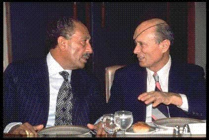
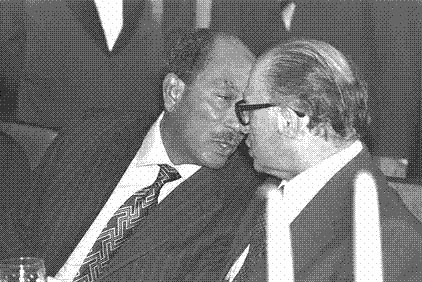

Мир с Египтом
После нескольких неудачных для египтян военных кампаний, известных как операция «Кадеш» (1956), Шестидневная война (1967) и война Йом-Кипур (1973), - Синайский полуостров некоторое время пребывал в руках израильтян, развивших на ее пустынной территории некоторую хозяйственную деятельность и заложивших курорт Шарм-А-шейх. К 1982-ому, в обмен на мирный договор, Израиль свернул свою деятельность на полуострове, вернул его «униженным и оскорбленным» египтянам и приступил к налаживанию «добрососедских» отношений с этой страной.
Единственной выполняющей, причем скрупулезно, подобострастно, - Договор от 1979 года является израильская сторона.
Более того, нельзя не отметить, что политика Израиля в данной сфере имеет ярко выраженную тенденцию не замечать откровенные плевки в свою сторону, следующие один за другим, из Каира.
Так, в Израиле упорно «не замечают» многолетнюю, ни на день не прекращающуюся антиизраильскую и грубо антисемитскую пропаганду в египетских СМИ, учебных заведениях. Пропаганду, являющуюся грубым нарушением сути, буквы и духа «Мирного договора».
Не проходит и дня, чтобы члены египетского парламента не разражались грубыми антиизраильскими выпадами. Включая законодательные инициативы СИЛОЙ «вернуть Египту» Эйлат!
На книжных выставках и в библиотеках страны открыто выставляются «Майн Камф» Гитлера и «Протоколы сионских мудрецов» а в телесериалах евреи пьют кровь христианских младенцев!
Если же говорить не о словах и фильмах, а о делах, то, как сообщают сотрудники израильской разведки и дипломаты, занимающиеся «египетским направлением», Египет все 30 лет, опираясь на американскую военно-финансовую поддержку (в награду за подписание мирного договора!) ведет, выражаясь языком советских газет, бешеную гонку вооружений. Причем, ее направление не может быть оценено иначе, как направленное исключительно против Израиля, как потенциального противника, ибо другие страны региона попросту не нуждаются в качестве потенциальных врагов в подобном радикальном, качественном военном перевооружении.
И, что самое опасное, - подобные тенденции Египта в Израиле попросту не являются предметом общественного рассмотрения и общественной дискуссии!
Под шумок (точнее – обманчивую тишину) израильских усилий «ничего не замечать», и стремления Израиля привлекать своего лютого врага - Египет к посредничеству в качестве «нейтральной стороны» к урегулированию палестино-израильского конфликта, Египет производит постепенный демонтаж наиболее мешающих ему положений «Мирного договора», таких как демилитаризация Синая.
Вот уже египетские заявления, в связи с непрекращающейся контрабандой оружия в Газу сводятся к тому, что увеличенное присутствие на Синае египетских пограничных войск (ради чего кстати Израилем был уже «сломлен» Мирный договор 1979 г), недостаточно Египту для полного пресечения контрабанды оружия. Теперь Каир требует свободы введения на Синай дополнительных тысяч военнослужащих, чтобы свести на нет «буферную подушку» демилитаризации Синая, препятствующую оперативной возможности египетского военного нападения.
Со свастикой – к евреям
Уроки Кемп-Дэвидского мирного договора
Александр Баршай
Бог, как известно, в деталях. Как в малой капле воды отражается целый мир, так в мелкой, казалось бы, незначительной подробности может открыться вся суть, вся глубина явления. Но постичь ее способен только проницательный, умный и сильный духом человек. Увы, 32 года назад, когда начались мирные переговоры между Израилем и Египтом, в руководстве страны таких людей не нашлось.
19 ноября 1977 года президент Египта Анвар Садат по приглашению премьер-министра Израиля Менахема Бегина прибыл в Эрец Исраэль. Израиль впал тогда в невиданную эйфорию. Как же: президент самого мощного арабского государства, самого грозного врага государства еврейского снизошел до визита к израильтянам! Более того: он, кажется, намерен сменить топор войны на трубку мира! В Беэр-Шеве, на пути предполагаемого маршрута Садата из Каира в Иерусалим вышли тысячи людей, чтобы приветствовать египетского гостя. Правда, они впустую простояли полдня, поскольку высокий гость попросту сел в самолет и прилетел в аэропорт имени Бен-Гуриона. Но все равно его встречали там с наивысшими почестями, перед ним выкатили красную ковровую дорожку, были и цветы, и любезные речи. На следующий день, 20 ноября, Анвар Садат при благоговейном внимании депутатов израильского парламента выступил в Кнессете с большой и жесткой речью на арабском языке. Он говорил об Иерусалиме, называя его Эль-Кудс, как о колыбели палестинской арабской культуры, он требовал отступления Израиля со всех завоеванных территорий. Садат говорил, а внимательные слушатели его как бы слушали, но не слышали.
Но самый поразительный сюрприз египетский лидер приготовил к вечеру того же дня, когда в Иерусалиме состоялся банкет в его честь, на котором присутствовало около 20 самых высокопоставленных руководителей Израиля во главе с М.Бегиным. На этот банкет египетский лидер явился в галстуке, украшенном ни больше, ни меньше, как узором из фашистских свастик. Это не было обманом зрения или случайным совпадением причудливого узора. Свастики отчетливо были видны всем участникам банкета, страшный символ гитлеризма абсолютно ясно прослеживается на снимках правительственной пресс-службы Израиля, сделанных во время бесед Садата с Бегиным и Моше Даяном. И вновь все, кто были на банкете, как бы смотрели на Садата, но не видели его отвратительного галстука. Это был выдающийся ход выдающегося египтянина. Это был хитроумнейший и дьявольский тест на честь и достоинство руководителей еврейского государства, на их национальную гордость и историческую память, на их мужество и принципиальность. И они не выдержали этого испытания. Никто из них не поднялся и не сказал: «Господин президент, вы наш гость, мы пригласили вас говорить о мире, но мы не можем игнорировать оскорбительного рисунка на вашем галстуке, это плевок в душу и память еврейского народа, потерявшего шесть миллионов своих сыновей и дочерей от рук фашистского режима, чьим символом является изображенная на вашем галстуке свастика. Пожалуйста, снимите его или замените на любой другой, иначе мы, к сожалению, не сможем продолжать наше общение». Увы, ни у кого из присутствовавших тогда на званом вечере не нашлось мужества высказать что-либо подобное в глаза наглому гостю. Все сделали вид, что ничего особенного не произошло. И Садат понял, что первый раунд переговоров он выиграл, что евреи у него в руках. И теперь можно требовать от них всего, что угодно, всего, чего не удалось захватить на поле боя. Как известно, все так и произошло.
В ходе последовавших затем Кемп-Дэвидских соглашений Израиль отдал Египту весь Синайский полуостров, политый кровью и потом тысяч израильских солдат и гражданских лиц. Отдал весь Синай до последнего сантиметра. А это 60 тысяч квадратных километров, что вдвое больше всей оставшейся территории Эрец-Исраэль. Более того, Израиль разрушил свой собственный город Ямит и еще 16 цветущих еврейских поселений, выросших на Синае, изгнал их жителей из своих домов, распахал поселения до пустынного песка. На Синае Израиль разведал богатые месторождения нефти, в инфраструктуру полуострова наша страна вложила миллиарды долларов, но ни копейки компенсации за все это Израиль от Египта не получил.
А что мы получили взамен. Об этом хорошо сказал сам «герой» Кемп-Дэвида Анвар Садат в интервью газете «Нью-Йорк Таймс» в октябре 1980 года: «Бедный Менахем (Бегин), у него свои проблемы… В конце концов, я получил обратно Синай и нефтяные поля Альмы, а что получил Менахем? Клочок бумаги!». А за четыре года до Кемп-Дэвида , в 1975 году Садат в интервью газете «Аль-Анвар», сделал заявление, к сути которого надо было бы вовремя прислушаться: «Наше правительство стремится вернуться к границам 1967 года. За дальнейшее ответственность возьмет на себя следующее поколение».
Сегодня уже многие люди в Израиле понимают, что корни наших нынешних бед и проблем нужно искать именно в кемп-дэвидских соглашениях 1979 года. Ведь именно тогда родилась абсурдная и преступная по своей сути концепция «территории в обмен на мир». Доведенная до своего логического конца она должна означать «Израиль - в обмен на мир», ведь наши многочисленные соседи-арабы считают своей всю территорию Государства Израиль и не скрывают этого. Этого, как мы видим, не очень-то скрывал и Анвар Садат. Но его истинных целей не поняли не только израильтяне, но египетские исламисты, убившие президента за его якобы мир с Израилем.
Еще одним последствием Кемп-Дэвида, является впервые появившееся в тексте международного договора понятие «палестинский народ». Как утверждает профессор политической философии из Иерусалима Пол Эйдельберг, никогда прежде в международных документах арабы Палестины не назывались палестинским народом. Ведь это явная ложь, ибо такого явления как палестинский народ просто не существует. Но в результате Кемп-Дэвида арабы выиграли раунд в пропагандистской войне, ибо теперь эту группу людей – порядка 10-15 арабских кланов – выходцев из Северной Африки и Ближнего Востока – называют во всем мире не иначе как "палестинский народ". Кстати, две трети жителей Иордании с точки зрения этнической, языковой, культурной, исторической принадлежат к той же группе людей, которых сегодня называют "палестинским народом".
Тогда же впервые Иудея и Самария официально были названы «Западным берегом реки Иордан». Именно с тех пор и по сегодняшний день этот термин стал общепринятым, причем не только в мире, но и в самом Израиле. И очень многие называют эти наши земли «оккупированным Израилем Западным берегом Иордана». А правда заключается в том, что эти земли никогда раньше не назывались "Западным берегом" (что составляет просто географическое понятие, как и понятие "Восточный берег"), а были частью подмандатной Палестины, как и нынешнее государство Иордания. Арабы, которые на разных этапах и, в частности, в период оккупации этих территорий Иорданией, жили в Иудее и Самарии, никогда не претендовали на какую-либо государственную самостоятельность. Мы отобрали эти земли у Иордании в результате оборонительной войны 1967 года. За те 19 лет – с1948 по 1967 год – что Иордания владела этими территориями, она лишь однажды попыталась установить свой суверенитет над ними, но никто в мире кроме Англии и Пакистана не признал его ни фактически, ни юридически. В 1970 году юридический советник Госдепартамента США Стивен Швайбель заявил, что у Израиля имеется больше юридических оснований, чем у кого-либо другого, на владение этими территориями.
То же и с Синаем. До Шестидневной войны 1967-года Египет владел этим полуостровом, но юридических прав на Синай у него тоже не было. Когда в результате оборонительной войны с египетскими агрессорами мы отвоевали Синай, то с точки зрения юридической, не говоря уже о военно-политической, у Израиля было куда больше прав на него, чем у Египта. В 1973 г. Египет сделал попытку отвоевать Синай, но потерпел поражение, после чего на Каирской конференции арабских стран в 1974 г. был принят план, известный как "план поэтапного уничтожения Израиля".
Этот план порой не без нашей помощи, стремятся осуществить следующие после А.Садата поколения наших радикальных исламских соседей. И если мы и впредь будем озабочены тем, как бы еще что-нибудь отдать, чтобы умиротворить врага, чем бы еще поступиться ради так называемого мирного процесса, если мы и впредь будем раскатывать красные дорожки перед нашими коварными недругами, если в обмен за гробы мы будем выпускать из тюрем кровавых бандитов, то, боюсь, каирский план может стать и реальностью. Не дай Бог, конечно!
На снимках: А.Садат с М.Даяном М.Бегиным
Фото пресс-службы правительства Израиля.

